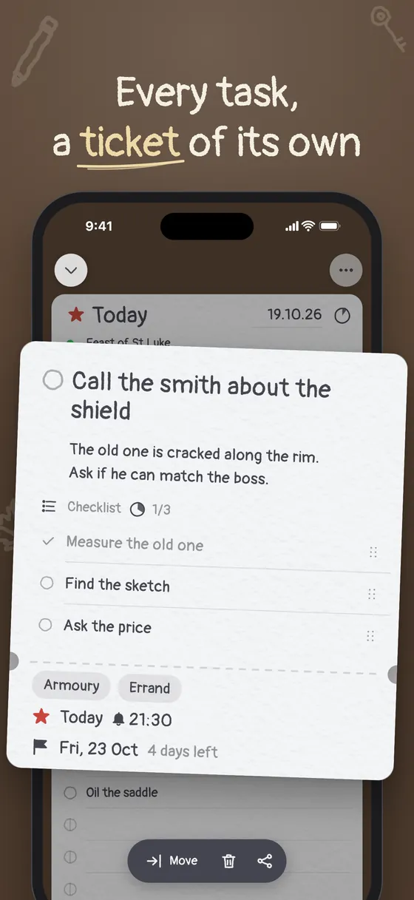
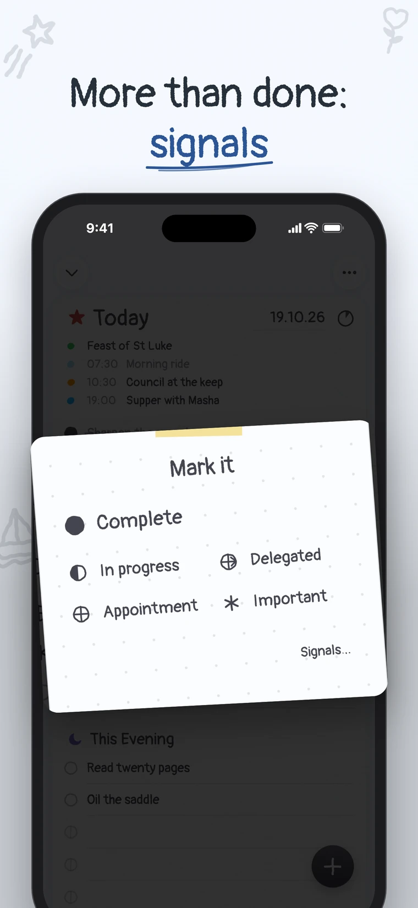
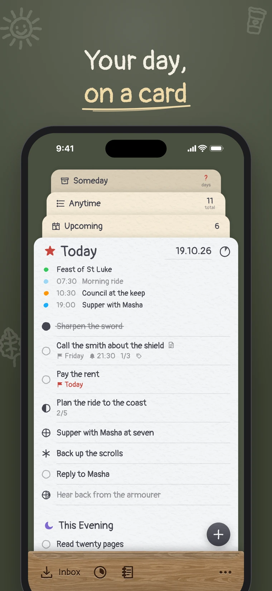
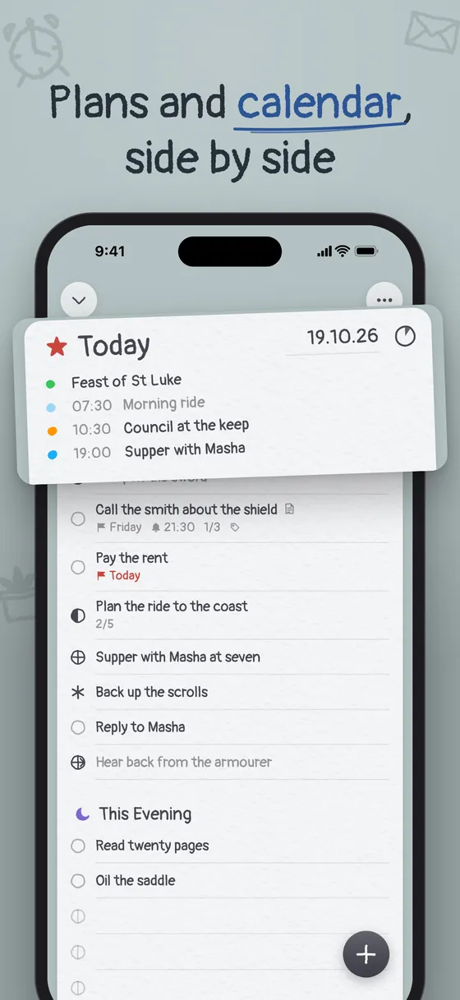
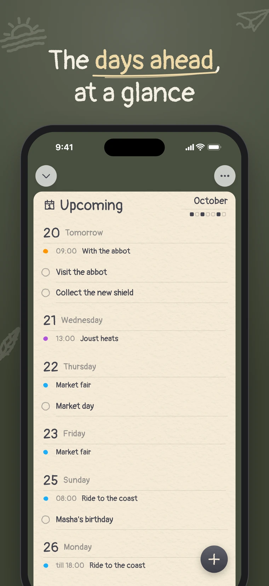
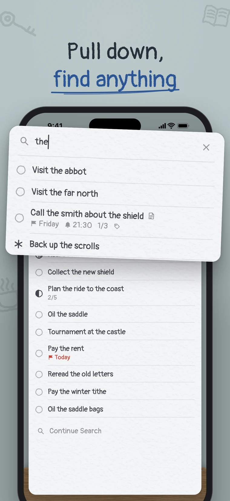
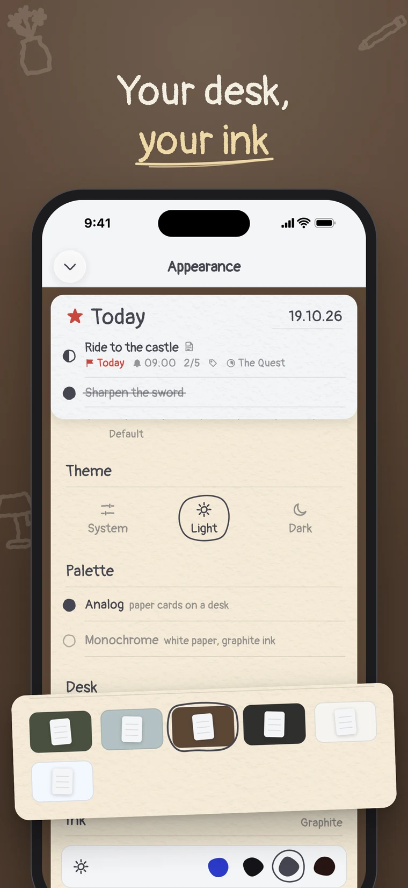
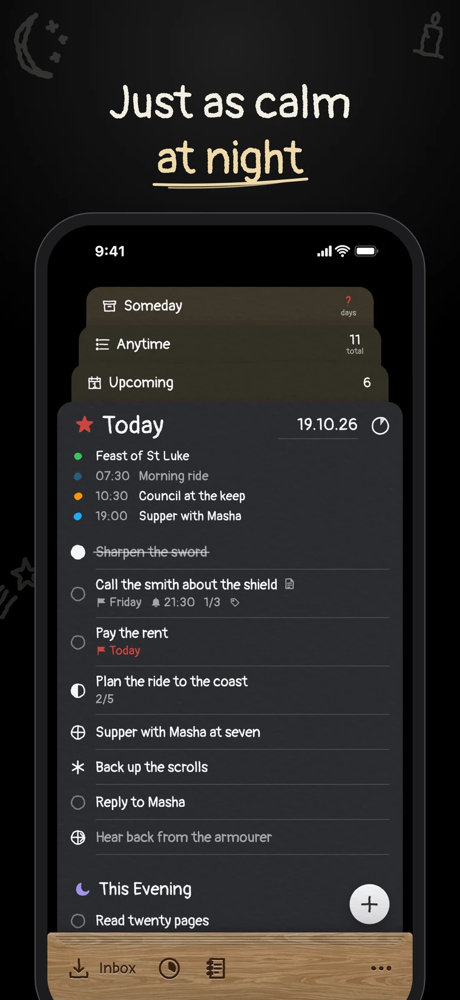
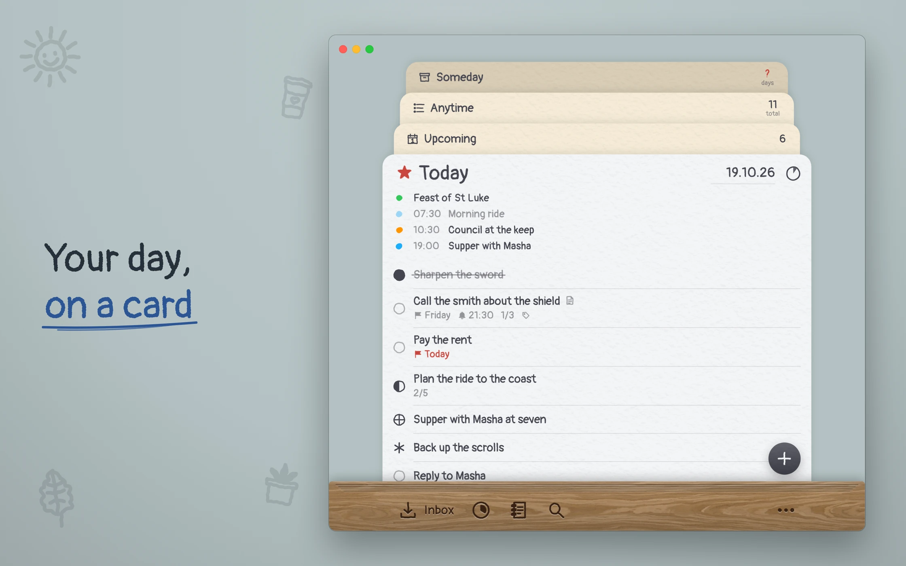

Your day,
on one card.
Taskward is a calm to-do list for iPhone and Mac. Every list is a paper card on your desk.
Join the beta on TestFlightFree, no account. Coming to the App Store soon.



Every list is a card of its own
Things come in, get a day or wait for one, and end up done. Each list has its own paper, so you always know where you are.
Whatever comes to mind, before you decide what it is.
What you take on today, and this evening under it.
The days ahead, with your calendar beside them.
Your stock of things to do, there when you are ready.
Put off, not forgotten. Looked through now and then.
Everything done, kept in the order you did it.
A task opens as a ticket
Notes, a checklist, tags, a deadline and a reminder, on a card torn off along a dashed line. Only what you have added shows; the rest waits as a pencil mark at its foot.
Call the smith about the shield
The old one is cracked along the rim. Ask if he can match the boss.
- Measure the old one
- Find the sketch
- Ask the price
More than done or not done
Hold a task’s circle and mark how it stands. Delegated and waiting fade into pencil, out of your way.
Mark
- Done
- In progress
- Delegated
- Meeting
- Important
- Waiting
Notes
Write it as you’d say it
Type “Gym tomorrow at 9am” and the day and the reminder set themselves; the words leave the title. Tap the highlight if you meant the words.
And a little more
Open a card edge to edge when a day needs all of you. Draw it down and it is back on the desk.
Draw Today down on home, or press ⌘F on a Mac: lists, projects, tags and tasks, as you type.
A card of its own for what isn’t a task. Move a note into your tasks, or a task back into notes.
The real app, on iPhone and Mac
The same lists on both, kept in step through your iCloud. On a Mac, a sidebar and Quick Find on ⌘F.






Your desk, your ink
Pick the desk the cards lie on, the ink you write in, how a done task is struck through, and smooth or toothy paper. Try a desk here:
Desk
Ink
Nothing of yours leaves your hands
- No account to make.
- No ads, no tracking, no analytics.
- Your tasks live on your devices and in your own iCloud, which we can’t read.
New to getting things done?
On first launch a little knight hands you a pile of errands and shows you how to sort an inbox, one task at a time. Skip it whenever you like.